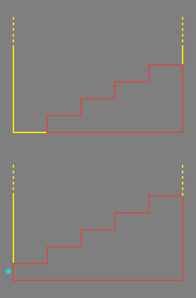

Making Stairs
Types of stairs builder
- linear
- curved
- spiral (and TarquinSpiralStairBuilder)
Use semisolids
Create stairs with semisolids. You'll save on a ton of BSP cuts. Though be careful with the Semisolid Region Limit Error (made-up name Stylistically, unless required by your levelmore than 8 or so stairs is a bad idea. It doesn't look good, and when a player runs up them their view goes de-dum-dedum-dedum-dedum. The method in the upper diagram (to the right)is better than the lower diagram, as the semisolid face marked with a * may vanish when looking at the stairs from the front. An additional reason not to use the stair tool, and instead use the 2D Shape Editor or a semisolid for your stair case is that each stair has a vertex? at its top and bottom, this causes the game to light the visible side of your stair case individually for each stair. This makes your stairs look quite ugly, as you can see below.
|

|

Mychaeel: This needs an overhaul...
Tarquin: Yes. We've got to find out what people want from stairs, how they relate to them, what sort of image they have for them – do people want stairs that can be fitted nasally? 
Mychaeel: I'd do it myself, if I only was into mapping at all... I just stumbled over this page when I tested the search function and found it lacking. At least a description of the stair builders might be handy here...
Tarquin: good idea. (I ws just being silly earlier  ) I'll grab the parameters next time I run UEd.
) I'll grab the parameters next time I run UEd.
Suggested questions to be answered on this page
Dimensions & Aesthetics
The the maximum height each step can have and still be passable without jumping is 32 Unreal Units. Steps are usually built 16 units high. (see General Scale And Dimensions for more).
Tarquin: the max value of 32 is from the Dimensions page, but I have a creepy feeling 32 isn't climbable. Will check
EternalEpoch: 32 isnt climbable without jumping, id stick to 16, 24 max
- What is the usual architectural rule of thumb on the proportion of the rise/run of each step? This is important for both visual appearance and playability.
Bean: IMO, 12-16 units height, 16 width in most situatiobs,
Tarquin: a run of 16 looks a little steep IMO. 32 is good. 48 or 64 looks more stately, like successive platform things (I'll find the word I mean later...)
FreshMeat I have steps 32 high and they work just fine in 2k4.
- Is it appropriate to make stairs be the sides of a Mayan Temple? (i.e., is it a good idea to use stairs to make large pyramid type shapes?
Bean: personal preference i guess
- Rotation of stairs is difficult off of the X, Y or Z axis. Any suggestions on how to do off axis rotations? Are they even a good idea given BSP problems?
Bean: just rotate at a given pivot. sometimes, I make stairs by sutracting a stair brush flipped upside down on another brush.
- Spiral staircases introduce higher complexity and problems with semi-realistic texturing. Any suggestions?
Bean: Dont use them, find an alternate. 
Tarquin: I think TexAlign will handle spiral stairs. Use SHIFT+I to quickly select surfaces by kind. (see Selecting Surfaces)
- Curved staircases - how much of a curve should they have and how many steps per revolution?
Bean: Don't use em, dont know. someone step in?
Aydin: Ive never had a problem with curved stairs. I think they are a great addition to any level. A cylyndrical room with curved staris? its a great idea!
Tarquin: thank you, whoever you are I'll expand a bit on some of those later.
Bean: thanks for the clarification Tarquin, i read some of what i wrote and it didnt sound right 
Phoenix: It does look good: Try 64 steps/rotation, and more than that number of steps, and when you subtract it, it looks impressive. It really adds to the feeling in some of my maps of insanity.
Related topics
- Architecture main page
- Semisolid